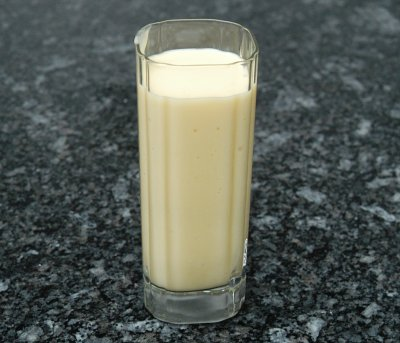

| Zutaten für 4 Personen: | |
| 1 | reife Mango oder |
| 1 Dose | Mango oder |
| 2 | reife Bananen |
| 2-3 El | Zucker |
| 500 g | Joghurt Nature |
| 3-5 dl | eiskaltes Wasser |
Die Fruchtstücke in einen Pürierbecher geben und pürieren.
Mit Zucker süssen.
In einer Schüssel das Joghurt mit dem Eiswasser schaumig rühren.
Das Mangopüreé dazu mischen und mit Eiswürfeln sofort geniessen.
Patricia Krummenacher, Indischer Kochkurs, 2006
Super gut! RE, 26.4.2008
@LINKBACK_TAG@ @WAKELOCK@